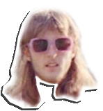

ECOB est une marque alsacienne de
gourde en verre recyclé, que j’ai créé avec
mon frère.
On a lancé la marque en juillet 2020 via
une campagne ulule.
L’idée est de proposer une alternative à la
consommation de bouteille en plastique
saine pour le corps et la planète, le tout à
notre échelle.
CONTACT
